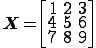

A matrix is a two dimensional rectangle of data. So this is a matrix jim named X:

We use the indices like this
X[2,2]
returns the value 5. That is the element in the second row and the second column.
One way to create vectors in R is by combining vectors. Let us say that we wish to create a matrix of data that represents some attributes of subjects in a study: their height and weight. We create two vectors, call them height and weight and combind them with cbind.
height<-c(1.2,1.6,1.3)
weight<-c(90,145,120)
attribs<-cbind(height,weight)
attribs
height weight
[1,] 1.2 90
[2,] 1.6 145
[3,] 1.3 120
Notice the bracketed index on in the left margin of the table. The first number in the square brackets is the row index. The second element is the column index. Here instead of a number the second element is , which is read by R as indicating all columns.
Alternatively we may have a new row of data for a new subject in the study. We could add this row with rbind.
attribs<-rbind(attribs,c(1.7,350))
attribs
height weight
[1,] 1.2 90
[2,] 1.6 145
[3,] 1.3 120
[4,] 1.7 350
So the function cbind binds columns together and the function rbind binds rows together.
Alternatively we can create a matrix using the function matrix as follows
mymatrix<-matrix(c(1,2,3,4,5,6,7,8,9),nrow=3,ncol=3)
mymatrix
[,1] [,2] [,3]
[1,] 1 4 7
[2,] 2 5 8
[3,] 3 6 9
The function takes a vector as its first input and then two parameters nrow the number of rows and ncol the number of columns. It then distributes the elements of the vector over a matrix with that number of rows and columns in order. You can omit the keywords ncol and nrow